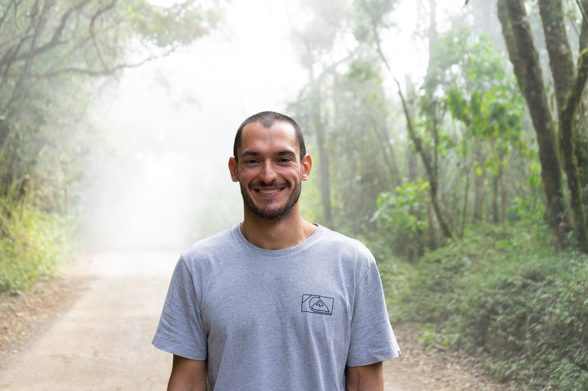

Fotógrafo de aventura baseado em São Paulo. Surfista, artista, viajante — na ordem que você quiser. Em movimento quando possível, mas sempre com a câmera na mão.
Meu trabalho está na natureza, mostrando que ela é maior que qualquer coisa: na trilha até a montanha, na onda mais desejada, no acampamento debaixo de um céu estrelado.
|||